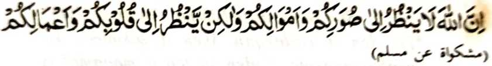
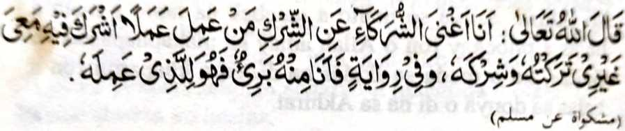
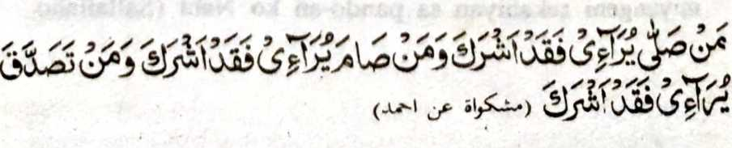
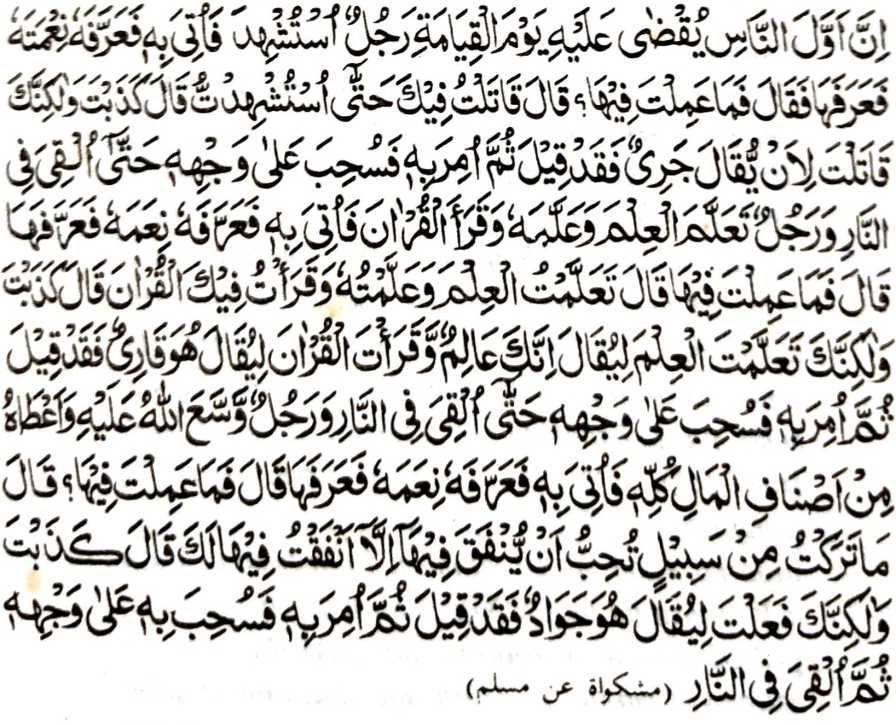

Piyaka-ibet-ibet aken mangeni ko gi-i mamanolon a pakaphasoda iran so manga katharo kan, go so manga ipendaptar iran, go so manga galebek iran ko Ikhlas. Apiya so maito a galebek na tanto a mala a balas a imbegay ron o Allah amay ka makaphapasod ko Ikhlas, ka o mada so Ikhlas na da den a khaparoli ron a balas sa donya o di na sa Akhirat.

Pitharo o Nabi (Sallallaho Alaihi Wasallam), “Mata-an a di pagilain o Allah so manga bontal iyo, go so manga tamok iyo, ogaid na aya phagilain Niyan na so manga poso iyo ago so manga galebek iyo. ” [Mishkat]
Si-i ko isa a masa na iniza-an so Nabi (Sallallaho ‘Alaihi Wasallam) o antona-ai ma-ana o Imaan, na aya minisembag iyan na, “Aya ma-ana niyan na Ikhlas.”
So Hazrat Ma’az (Radhiallaho ‘Anho) na aya biyaloy a olowan sa Yemen. So kangganat iyan, na miyangeni sekaniyan sa pando-an ko Nabi (Sallallaho ‘Alaihi Wasallam), na pitharo iyan, “Pag-lkhlas ka ko langowan o paratiyaya ngka go so manga galebek ka, sabap sa mapakaphagomareg iyan so balas o manga pipiya ‘Amaal ka." Si-i ko isa a Hadith na pitharo iyan, “Aya bo a tharima-an o Allah a ‘Amaal o oripen Niyan na so miniphasod sa tolabos si-i Rekaniyan.”

Si-i ko isa a Hadith na pitharo o Allah, “Da den a kailangan Aken a sakotowa ko ipephamanakoto. Saden sa tao a magamal a aden a inisakoto niyan non a salakao Raken na tiyaples Aken angkoto a Amaal ko inisakoto niyan Raken." Si-i ko isa a kiyapanotholaon na. “Na saken na angiyas Ako den ko Amaal iyan." Miya-aloy pen ko isa a Hadith a phakalangkapen ko Gawi-i a Kaphangokom: “Saden sa aden a inisakoto niyan ko Allah ko Amaal iyan, na sekata niyan sangkoto a inisakoto niyan ko Allah so balas iyan, ka so Allah na da a kailangan Niyan a sakotowa. ’
Isa a Hadith a pitharo iyan:

"Sa tao a phowasa sa kapaki-ilay lain na sabenar a miyakapanakoto, go sa tao a zadqah sa kapaki-ilaylain na sabenar a miyakapanakoto.” [Mishkat]
So kapakasogok sa kapanakoto na aya ma-ana niyan na da niyan matolabos angkoto a mapiya galebek iyan sa aya bo a pezoa-soatan niyan non na so Allah, sabap sa so kiyapaki-ilain niyan non ko manga tao a antap sa kakhowa-a niyan ko babaya a ago kasoso-at iran, na giyoto-i kinisakoto niyan ko Allah sa maito.
Aden a isa a Hadith a lagida-i a ma-ana niyan.

"Mata-an a paganay ko manga manosiya a khokomen ko Gawi-i a Qiyamah na mama a mipherang. Pakatindegen sekaniyan na paki-ilay ron so manga limo-on o Allah, na tharo-on Niyan: Antona-ai inikidi-a ngka sangkanan [a manga limo]?' Misembag iyan, 'Mipherang ako sabap Reka taman sa miyaperang ako.' Tharo-on Niyan, 'Miyamokhag ka! Aya mata-an na mipherang ka sabap sa an niran matharo a mawaraw. Na sabenar a miyatharo iran noto. ” Oriyan niyan na isogo [Iyan] a pangarasen niyo so paras iyan na pozanga niyo ko Apoy; go so mama a miyaganad sa ‘Ilmo go inipamangenda-o niyan go pembatiya-an niyan so Qur'an na pakatindegen sa sekaniyan na paki-ilay ron so manga limo-on o Allah na tharo-on Niyan: Antona-ai inikidi-a ngka sangkanan [a manga limo]?' Misembag iyan, 'Piyaganad aken so 'Ilmo go inipamengenda-o aken go biyatiya aken so Qur'an a soa-soat aken Reka.' Tharo-on Niyan, 'Miyamokhag ka! Aya mata-an na piyaganad ka so 'Ilmo ka sabap sa an iran matharo a mata-an a seka na 'Alim go biyatiya-a ka so Qur’an ka an niran matharo a seka na pababatiya na sabenar a miyatharo Iran noto." Oriyan niyan na isogo [Iyan] a pangarasen niyo so paras iyan na pozanga niyo ko Apoy; go so mama a inikalimo o Allah sekaniyan go bigan Niyan sa mala a tamok sa pakatindegen sekaniyan na paki-ilay ron so manga limo-on o Allah na tharo-on Niyan: 'Antona-ai inikidi-a ngka sangkanan [a manga limo]?' Misembag iyan, 'Da den a lipas aken a okit a pekhababaya-an ka so kazadqa-i ron a bako ron da makazadqa a so-asoal aken Reka. Tharo-on Niyan, ‘Miyamokhag ka! Aya mata-an na mizadqa ka sabap sa an iran matharo a barazadqa. Na sabenar a miyatharo iran noto.” Oriyan niyan na isogo [Iyan] a pangarasen niyo so paras iyan na pozanga niyo ko Apoy.
[Mishkat]
Giyoto-i sabap a so manga pephanolon reketano ko Islam na pananggila-i ran so kapaki-ilaylain ago so kapanakabor, sa taralebi ron a nggalebek siran sa aya bo a zoa-soata iran na so Allah. Songkada iran so Sunnah o Nabi (Sallallaho ‘Alaihi Wasallam), go oba iran zinganina so bantogan, go so kasosoat ago babaya o manga tao. Opama ka aden pen a matatago san ko manga pamikiran niran, na tanora iran sa si-i makanggolalan ko kabatiya-a ko Laa Haula Wa Laa Qowwata Illa Billahil ‘Aliyyul Adheem ago Istighfar.. Phangenin aken ko Allah a ibegay Niyan reketano so Ikhlas ko sakodo tano ko Agama Niyan si-i ko pithamana o khagaga tano.